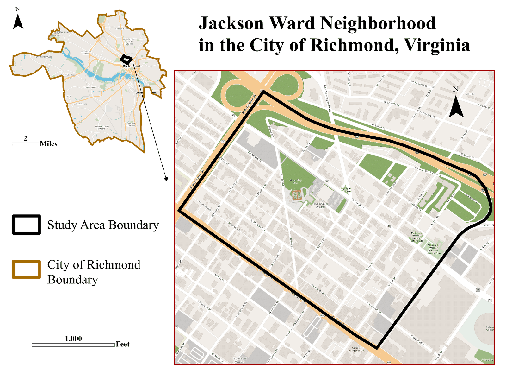

A Multi-Year Research Project
Years of research projects focused on the stories of Jackson Ward, one of America's most significant African American neighborhoods, historically known as the "Harlem of the South" and the "Birthplace of Black Capitalism," and home to transformative historical figures like Maggie Walker, Rev. John Jasper, and William Washington Browne.
Browse by YearJackson Ward, in the heart of Richmond, Virginia, was a thriving center of Black commerce, culture, and community life from the late nineteenth century through the mid-twentieth century, and it remains a living neighborhood today. Since 2023, this has been a recurring research project, building on itself year after year as University of Richmond students develop each project around the neighborhood's identity, its history, and how to push the community forward. Above all, this work is for the community: each project is meant to give Jackson Ward an extra voice, and the voices of its residents always come first, they are who the research is for and who it answers to.
This site is organized by the year each project was carried out, by the summers of student research that produced the work. The research is conducted during faculty-led summer fieldwork in the Department of Geography, Environment, and Sustainability, in collaboration with the Historic Jackson Ward Association. Start with the most recent year, or trace the project from the beginning. Learn more about the partnership →
Much of this research has, until now, lived in places the public rarely sees: conference posters, class presentations, data files, and the memories of the students and residents who took part. This website exists to change that, to gather years of work into one lasting, public place where anyone can explore it.
The goal is threefold: to make the findings accessible to the people of Jackson Ward and to the wider Richmond community, not only to academic audiences; to preserve the neighborhood's history and the stories residents have shared, so they are not lost; and to give the community a resource it can point to, build on, and use to advocate for the neighborhood's future. As the project continues year after year, this site will continue to grow with it, serving as a living record of Jackson Ward that's told alongside the people who call it home.

Each year is a self-contained project. Click through to read the full work.
Second Street
Reading the rise, fall, and revitalization of Jackson Ward through Second Street, the cultural hub of the neighborhood for decades.
Open the 2026 project →Pedestrian Heat Stress
Mapping urban heat block by block across Jackson Ward, and partnering with the city arborist to plant trees in its hottest spots.
Open the 2025 project →Boundaries & Identity
Mapping the contested boundaries of Jackson Ward and surveying residents on where they believe the neighborhood begins and ends.
Open the 2024 project →Mapping the Displaced
An interactive app built on 1950 census data, helping residents trace family and neighbors pushed out of Jackson Ward by highway construction.
Open the 2023 project →